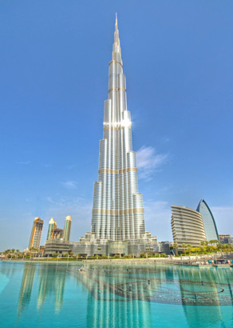
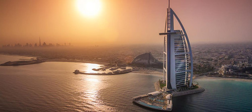
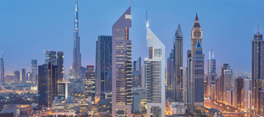
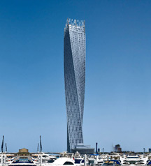
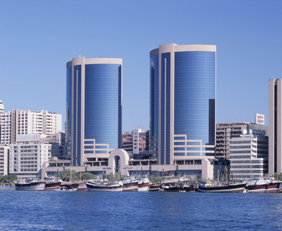
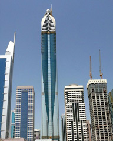

Burj Khalifa ( Torre Califa) és el edifici més alt del món amb 828 metres. Es més gran que la famosa torre de Nueva York, Empire State amb 381 metres. Oferint unes vistes sorprenents, en la planta 124, localitzada a 442 metres d’altura. Hi ha un altre mirador en la planta 148 de l’edifici a 555 metres d’altura.
El Burj Al Arab, es el únic hotel amb 7 estrelles del mon, des de la seva construcció va ser catalogat el millor hotel del mon, per els diversos experts hostalers. Té una altura de 321 metres i totes les seves habitacions son suites. Per visitar-lo tindreu que fer una reserva per menjar.
Aquestes dues torres son un símbol més reconegut de Dubai. Una torre són oficines i la segona es el hotel Jumeirah Emirates Towers de 5 estrelles.
Es l’edifici amb espiral més alt del món, té 307 metros d’altura i una estructura de 90ª graus, creant la forma d’una hèlice.
Les Torres Bessones de Dubai, van ser els primers edificis característics de Dubai, es troben a la riba de Deira i en la planta inferior es troba un centre comercial.
Es un dels hotels més alt del món, amb 333 metres d’altura, superant el Burj Al Arab. Rose Rayhaan Rotana és una de les cadenes hoteleres més importants de Dubai.